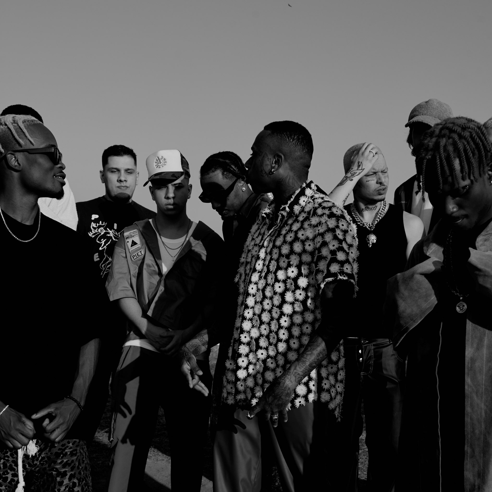

Igor Kuwahara, mais conhecido pelo pseudônimo de MC Igu, é um cantor japonês nascido na província de Yamanashi, que possui cerca de 850.000 habitantes. Ele encaixa-se no gênero musical rap e trap, sendo bem conhecido aqui no Brasil como um dos maiores, se não o maior.
Recayd
Mob
Recayd Mob é um grupo de trap brasileiro muito conhecido nacionalmente, é composto por várias pessoas, mas os principais membro são: Jé Santiago, Dfideliz, The Boy, Derek e os NANA. Um dia, esse pessoal estava numa festa e acabou encontrando Igu, que, nessa época, estava começando na música, porém, já tinha vários singles lançados. Isso interessou o grupo, que logo o chamou para fazer parte. Igor prontamente aceitou e faz músicas com eles até hoje. Por conta disso, ele foi fazendo mais e mais sucesso, lançando músicas com a Recayd Mob, que promovia o seu nome (e do resto dos membros), como: "George Bush", "Flack Jack," "Spinner", "Uzi" etc. Esse acontecimento também foi uma grande oportunidade para a participação dos membros do grupo nas músicas solo de Igor.
